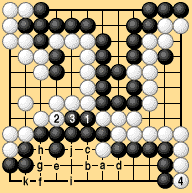
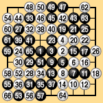
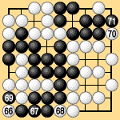
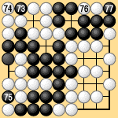
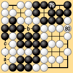

| 4.2 The Last-Competitive-Move Rule (1) |
|---|
|
Let us attempt to formulate area rules III. The single problem confronting us is how to define the last competitive move. Under area rules every move that occupies a neutral point is worth one point, so our definition of the last competitive move will have to differ from the traditional territory concept. A reasonably understandable way to express the concept of the last competitive move is to call it the last move that gains anything as compared with letting the opponent play instead. This expression applies both to traditional territory rules and to area rules, although perhaps with some difference in meaning. As a rule, however, this definition leaves certain doubts. The last move that gains anything may be a comparatively clear idea to people who understand the game of go, but it is inappropriate as a definition in the rules. Let's look at some examples that show how unclear it can be. Suppose that after White 4 in Dia. 4-1, Black plays 5 at 'a' for safety. Which was the last move that gained anything: White 4 or Black 5? That is not an easy question. This position is borrowed from a professional game in which Black ignored White 4 in order to connect a ko. White than played diagonally at 'b,' followed by moves in alphabetic order through White 'k,' which was quite a disaster for Black. |
|  |
| Dia. 4-1 |
|---|
|
If Black plays correctly he wins the capturing race, but in a game between amateurs, it would take a lot of study of different variations at the end to decide whether Black 'a' was necessary (in which case Black 5 was the last competitive move) or not (in which case White 4 was the last competitive move). You may verify that Black is safe if he plays 'f' at 'h.' Accordingly Black 'a' is unnecessary and White 4 is the last competitive move of the game. As a second example we can take the game on a nine-by-nine board between Go Seigen and Miyamoto Naoki presented earlier. This game, shown again in Dias. 4-2-1 to 4-2-4, was played by traditional territory rules and ended at White 80. Black removed the White group in the lower left by actually capturing it and won by four points. You should check that under area rules II Black wins by five points. If the game is played out under area rules, it ends with Black 'a,' White 'b,' Black 'c' in Dia. 4-2-4. |
|  |  | |
| Dia. 4-2-1 |
|
|
|---|---|---|
|  |  | |
| Dia. 4-2-3 | Dia. 4-2-4 |